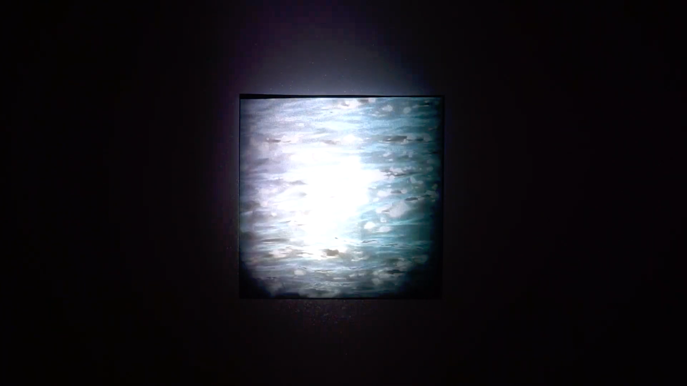
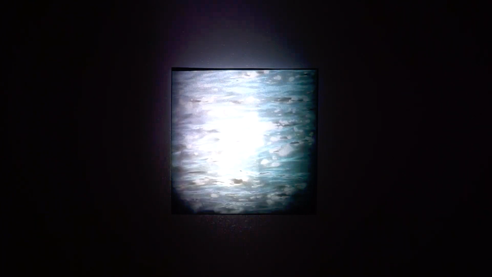

暗転と永遠の中で。
2019.12 / Video Art
黒い正方形のスクリーンに朝・夜それぞれの河面の映像が投影される。この河は全て東京都内で撮影した。朝日が乱反射した広い河を東京行きの電車から眺めたり、夜闇を映し撮った深い堤防に囲まれた河を覗き込んだりすると懐かしさや儚さや健やかさを感じる。東京の河川を通して、文明によって消え去った都市の暗闇と、日常でふと感じる永遠に続くかのような瞬間を表現した。
筑波大学 情報メディア創成学類の講義「ディジタルコンテンツ表現実習」の成果物として制作。同授業の最終成果発表会である「1/100展」にて展示。
Caption
山手線の外側にある街。石神井川は深く冷たいコンクリートの堤防の下に静かに流れる。川に沿って葉の落ちた枝垂れ桜の並木道が伸び、住宅が立ち並ぶ。僕たちは眠る必要がある。眠らないネオンと都市の明かり。東京の端っこに追いやられた暗闇。
電車に乗る。女の子とのデートの朝。乗車口のあたりに立って、寄りかかる。やることもないのでイヤホンをつけて、外の景色に目をやる。音楽が流れてくる。電車が高架線に差し掛かると、隅田川が煌いて、僕はこの景色がいつまでも続くと思う。スカイツリーが見えた。
Credits
- 映像：小貫 智弥
- 音楽：金子紫苑
作品に寄せて (2021/8/31 )
河川は境になっており、それを越えるという行為には不思議な感覚があります。その年の台風は特別に強くて、房総に多大な被害を与えました。そんな台風一過の朝、私の目はつくばエクスプレスの車窓から見える利根川を捉えました。増水し、河川敷の野球場をも飲み込んだ利根川の河面は朝日を乱反射して煌めいていました。あれほどの猛威を振るった自然は、翌日には素知らぬ顔で美しい姿をみせるのものなのかと、そしてそれは日常的に起こっているのかと強く感じたのを覚えています。
 
